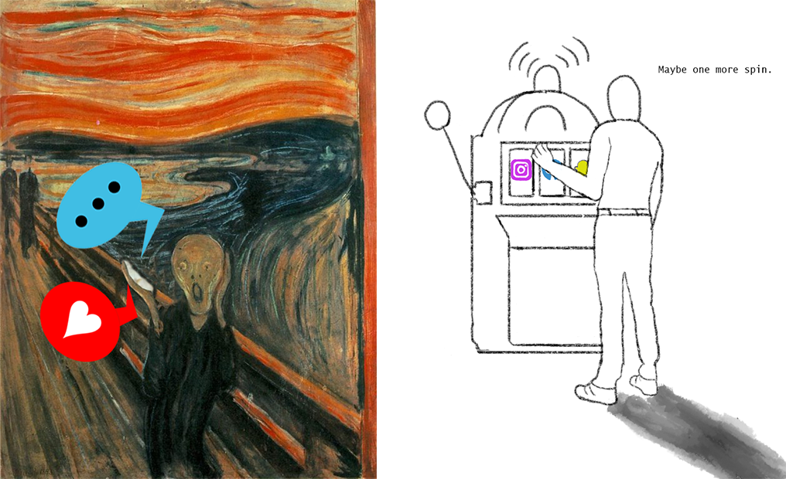
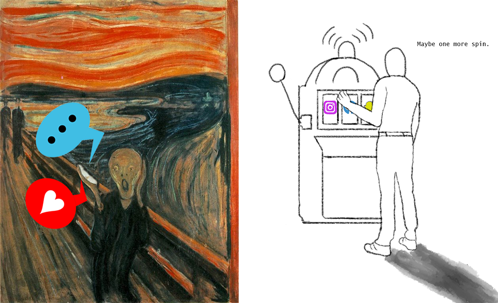

Bachelor Thesis

In my Bachelors Thesis I wrote about the effects of Digital Media
on the attention of its users. Especially interesting were the
implications of the so-called "Dark Patterns", that manipulate the
users in different ways.
The thesis taught me multiple things about how you write a scientific
paper and correctly cite sources.

In my Bachelors Thesis I wrote about the effects of Digital Media on the attention of its users. Especially interesting were the implications of the so-called "Dark Patterns", that manipulate the users in different ways. The thesis taught me multiple things about how you write a scientific paper and correctly cite sources.